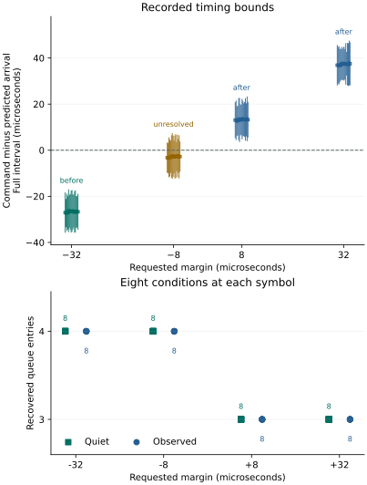

Question and rationale
The first arrival-boundary run changed the first admitted arrival and recovered count when commands crossed a locally estimated boundary. That result was confined to one boot. This repeat asks whether the relation recurs after power loss with unchanged instructions, settings and assessment rules.
Predictable coordination of establishment and observation is useful for further physical-state work toward Seigsit creation and transfer. The current experiment measures that local timing capability; its queue entries and timing classes do not establish the intended physical Seigsit relation.
Unchanged method
The complete method retains 72 conditions and 405 operations, divider A–B–B–A order, input 4, four-millisecond reference and acquisition windows, unchanged-value divider writes, fresh admission guards, local recoveries and restoration. Continuous conditions use quiet/observed/observed/quiet order at −32, −8, +8 and +32 µs; blocks 2 and 4 reverse the eighteen-condition order. Four no-command and four single-command conditions provide controls.
Each condition measures its own reference-period interval. The native estimator intersects adjacent error-clear unit-arrival spacing bounds. Its integer midpoint selects a deadline around the projected second arrival from divider-write access. The complete reference and command brackets remain recorded; the midpoint does not narrow uncertainty.
Assessment
The repeat protocol fixes the comparison before execution. A command is before or after only when its complete access interval lies strictly outside the projected arrival bracket. Touching and overlapping intervals remain unresolved. Independently reconstruct the reference intersection, deadline, actual position, possible/certain recovered counts and observed first cycle.
Compare corresponding conditions by sequence, block, divider, mode, side and margin. Preserve reference-count differences, command delays, alternative timing origins and control failures. Neither a previous outcome nor the requested margin determines the current timing classification. Recurrence is a descriptive result across two boots, not an estimated general reliability.
Preparation and execution
Run F58DDEAB7F71 has a new recording identity and reserved journal. All 27 source inputs, 405 operation definitions, executable streams and placement are identical to the first run. The complete payload differs only in its recording-identity header. All 72 image-bound qualification checks and both installation readbacks passed.
The declared allowance remained five minutes. The target recorded 201.598266 seconds from coordinator entry to its terminal snapshot; the first boot recorded 201.622738 seconds. These intervals exclude loader time and final-record writing/readback. Actual powered duration and boot count were not separately reported.
Authored SEIGRASM instructions perform the acquisition. PC tools package and inspect evidence. Existing ROM/EEPROM loading, AArch64 execution and counter, SD transport, retained PCIe bridge configuration and RP1 component state remain apparatus dependencies. Acquisition invokes no firmware service.
Results
All 5,121 records, 405 operations and 72 conditions completed. All reference estimators succeeded, all declared unchanged-divider writes occurred, and their immediate readbacks matched. No deadline or admission guard failed.
| Margin | Position | Entries | First cycle |
|---|---|---|---|
| −32 µs | 16 before | 4 in all 16 | 2 in all 8 |
| −8 µs | 16 unresolved | 4 in all 16 | 2 in all 8 |
| +8 µs | 16 after | 3 in all 16 | 3 in all 8 |
| +32 µs | 16 after | 3 in all 16 | 3 in all 8 |
In each boot, all 48 resolved continuous counts matched equal certain/possible predictions, and all 24 observed resolved cases matched the predicted first cycle. All sixteen unresolved cases allowed three or four entries and recovered four. The −8 µs position remains unresolved in both boots, even though its observed first cycle is consistently 2.
Matched individually, all 72 acquisition counts, all 64 continuous classifications and all 32 observed continuous first-cycle comparisons agree across boots. The total acquisition recovery is 228 entries in each boot.

Differences between boots
| Observation | First boot | Second boot |
|---|---|---|
| Reference entries | 237 | 243 |
| Acquisition entries | 228 | 228 |
| Quiet/observed counts agree | 32/32 | 32/32 |
| Write-relative intervals overlap | 32/32 | 31/32 |
| Boundary-relative intervals overlap | 32/32 | 32/32 |
| Older reference origin compatible | 2/32 observed continuous | 0/32 observed continuous |
Reference counts changed in 26 corresponding conditions: sixteen changed from three to four entries and ten from four to three. The other 46 reference counts agreed. All reference intervals remained usable. These differences show that the reference trajectories were not identical, while the prospectively specified acquisition counts recurred.
One second-boot pair, block 4 at +8 µs, has disjoint write-relative command intervals. Recorded sequence 59 (quiet) spans 142,294–142,501 ticks after the divider-write bracket; sequence 60 (observed) spans 142,066–142,260 ticks. The gap is 34 ticks, or 0.630 µs. Their boundary-relative intervals are respectively 234–1,207 and 334–1,088 ticks: both are wholly after the boundary and overlap. Both recover three entries. The per-condition reference interval changes from 70,647–71,030 to 70,586–70,866 ticks; the resulting deadlines differ. This pair does not establish identical command timing or an observation-induced effect.
The write-relative first-cycle model is compatible with all 32 observed continuous acquisitions in both boots. The alternative older-reference continuation was compatible in first-boot sequences 56 and 61, and in no second-boot observed continuous condition. The first boot's two ambiguities remain part of the evidence; the repeat does not erase them or establish an exclusive internal mechanism.
Timing, controls and restoration
Second-boot continuous command start followed wait completion by 2.870–3.556 µs, median 3.278 µs. The first boot's range was 2.870–3.611 µs with the same median. Maximum wait overshoot across all conditions was 31 ticks (0.574 µs), compared with 39 ticks (0.722 µs) previously. Recorded counter frequency was 54 MHz.
Continuous preparation lasted 33.759–43.352 µs; initial queue-read brackets spanned 1.315–1.426 µs and command-access brackets 1.630–2.056 µs. These intervals include observation and access overhead; they are not internal conversion timestamps.
All four no-command controls recovered zero entries and all four single-command controls recovered one. All 144 local and post-acquisition recoveries ended empty without queue overflow, underflow or reported sample error. Reference and acquisition recoveries contained 471 raw codes, ranging from 841 to 863; these are uncalibrated observations. Cleanup recovered no remaining entry and restored converter control, divider and clock control to zero, and FCS to 0x100.
Interpretation and next investigation
Inference: the conditional boundary response recurred after a separate initialization on this apparatus, across both dividers and observation modes. This supports using reference-derived SEIGRASM scheduling as a local capability for subsequent work. It does not establish general reliability, internal conversion phase, independent analog freshness, exclusive component ownership or physical Seigsit creation and transfer.
The next investigation should use this timing capability to test physical-state establishment and observation. Its first prerequisite is an evidenced connection between a controllable electrical source and a distinct observation path within the cluster. Specify that connection and its accessible controls before assigning state identities. Then compare a changed source with an unchanged-source control, preserving raw observations, timing and restoration. Expand toward six distinguishable states only when that physical relation is demonstrated. Timing classes or decoded queue values alone do not supply it.
Evidence and provenance
Two read-only captures agree. Capture SHA-256: f6641f169e3c95006197b7d15e8572dc298d4001d3649c0190df9843b362a7b6. Image SHA-256: 7e3a1a8fafcc6024deb7d5402748a26865bbfc0a6eaf265e4bcca01df807b96d.
Independent raw-record reconstruction checks senary fields, identity, ordinal, integrity, padding, unused reservations, native period arithmetic, deadlines, boundary positions, recovered-count bounds and first cycles. The partition table, geometry and boot files were unchanged, and FAT copies agreed. Seven sectors outside the journal differ, including System Volume Information; their writer and timing are not established.